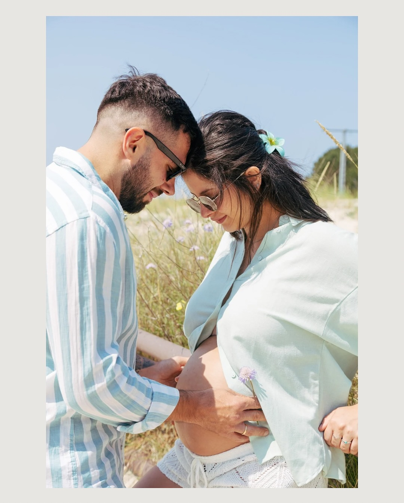
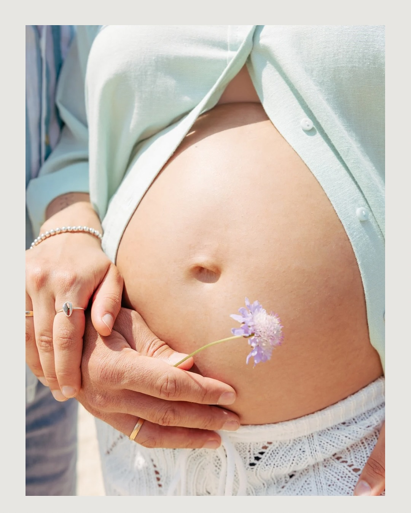
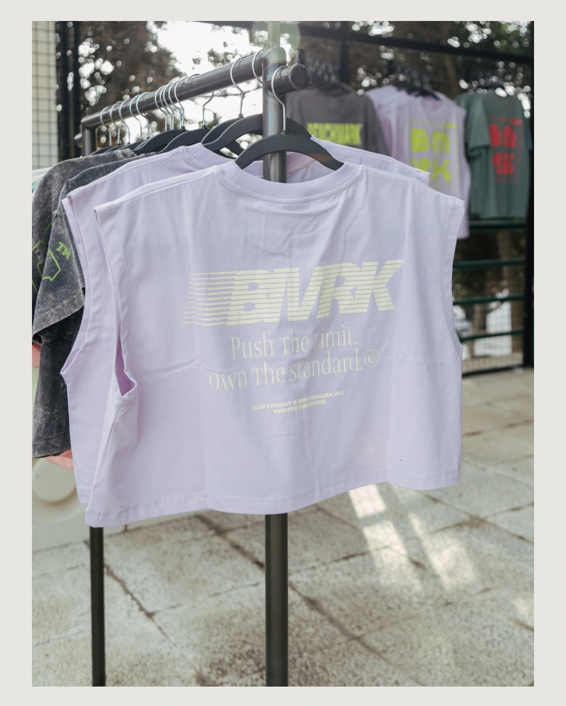
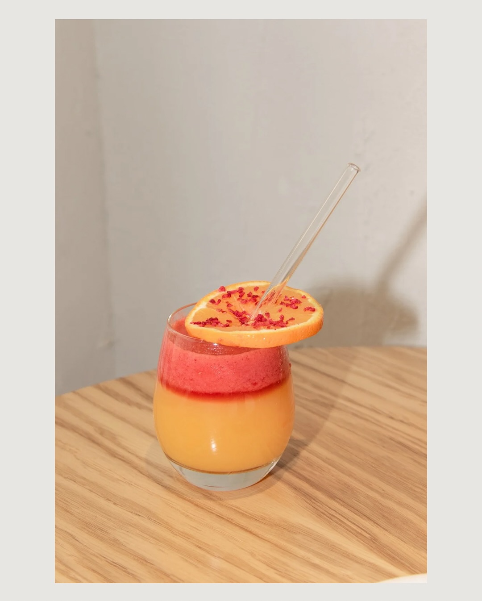
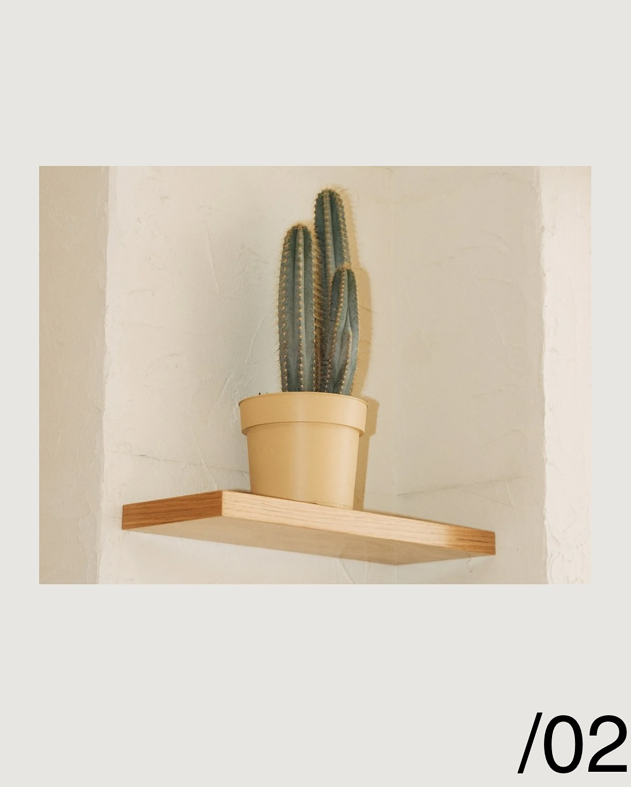
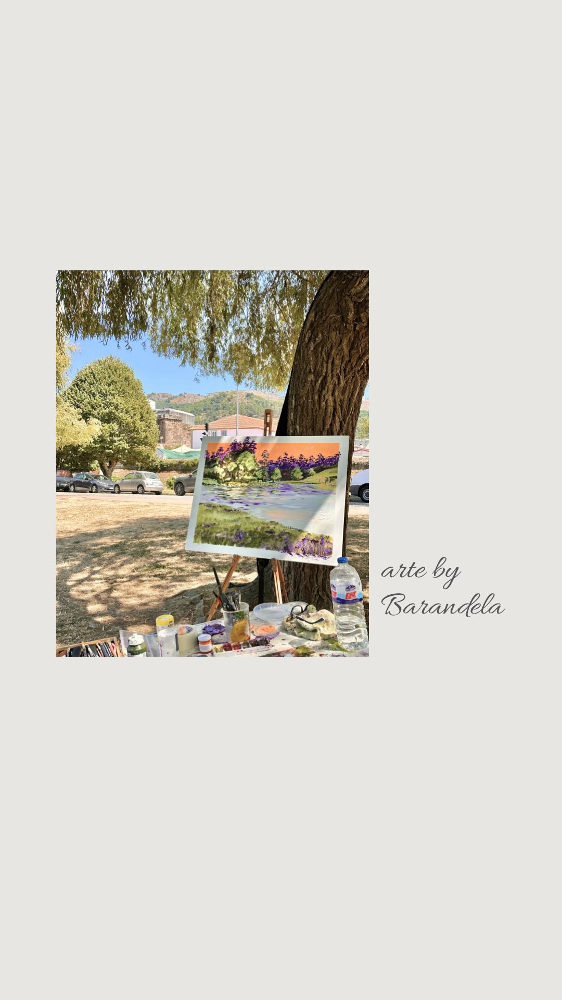
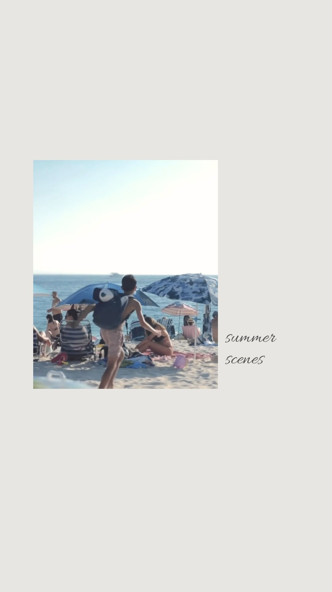
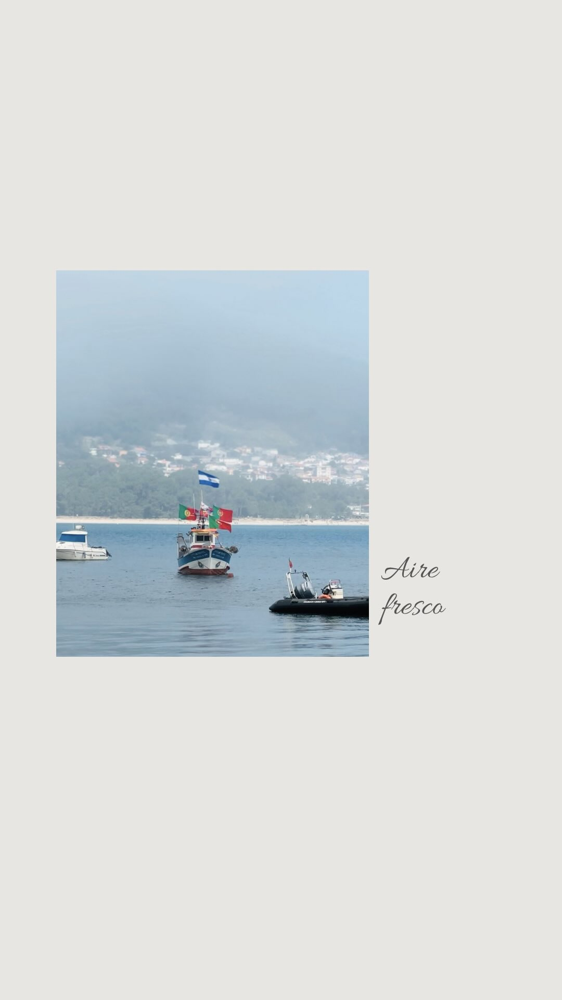

Selección visual
Portafolio
Una colección de imágenes donde conviven maternidad, producto, detalle y lifestyle. La idea es explorar cómo la luz y la composición pueden construir calma incluso dentro de escenas cotidianas.

Luz de verano

Flor en primer plano

Drop editorial

Breathe

Objeto y contexto

Color de mesa

Ritual lento

Silencio en repisa

Pausa creativa

Summer scenes

Aire fresco
@silapadin_photography
Sigue la mirada en Instagram para ver sesiones completas, avances y nuevas series.